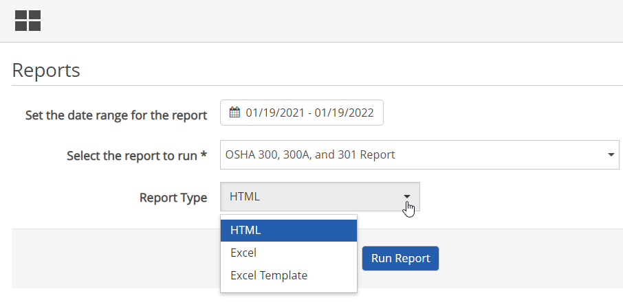

The following default reports are provided as part of the IncidentApp:
To run a report:
Select Reports from the main menu button.
In the Reports screen, select the report to run from the dropdown list.
Select the report type: HTML, Excel or Excel Template.
For the default reports provided, select Excel Template to view a formatted report in Excel.
Click Run Report.

Reports that can be run from the IncidentApp are stored in the report folder named EII-IncidentAppReports. Users must have permissions for this report folder. Reports may be customized as you wish. You may also create your own reports to run from the IncidentApp.